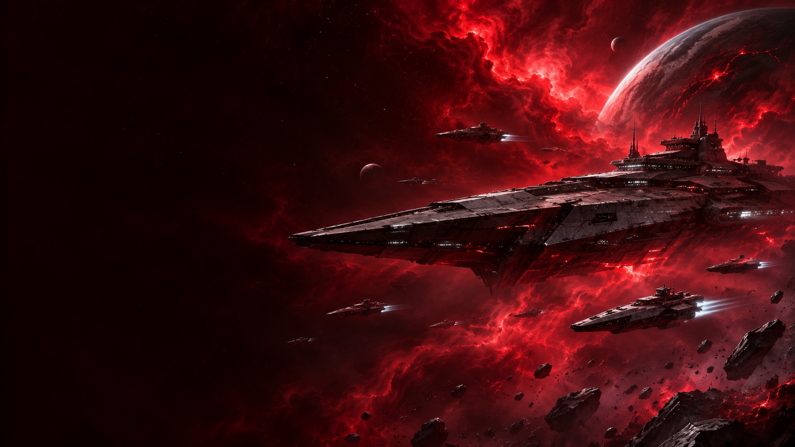
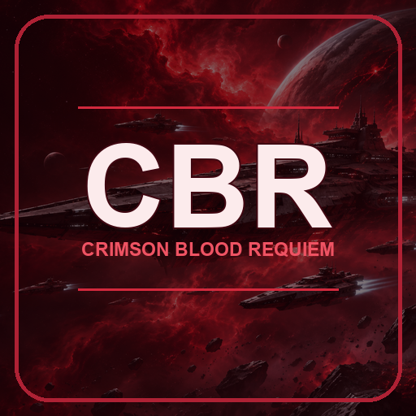

Find your next watch
Browse movie and series listings with artwork and dedicated searches. Connect multiple Stremio-compatible manifests from the source manager.

Crimson Blood Requiem for Kodi
Movies, series and live TV in one add-on. Explore your sources, build your channel guide and make Kodi your own with a dark, space-inspired interface.
Install through Kodi. Add the optional CBR skin whenever you’re ready.
What is CBR?
CBR brings your provider catalogues and playback into Kodi, with separate movie, series and live TV browsing.
Browse movie and series listings with artwork and dedicated searches. Connect multiple Stremio-compatible manifests from the source manager.
Bring supported channels into Kodi’s TV section, with channel logos, editable groups and programme schedules where available.
Pair a phone or PC on your home network to paste manifest links, organise channels and match missing programme listings.
The platform-specific packages include Windows playback or install the Android engine through Kodi. No separate companion app to start.

Original CBR add-on artwork
Make it Crimson
Deep blacks. Crimson highlights. A fleet against the stars. The optional CBR skin carries the look through Kodi, including its TV and guide screens.
Install the add-on first, then use the CBR Setup Wizard to apply the space interface. Your previous skin can be restored from the wizard.
Set up the CBR appearanceChoose your platform
Start with Kodi 21 or newer. Choose your device below for the correct repository and step-by-step installation.
For Firesticks, Fire TV televisions and Android TV boxes running Kodi. Kodi installs the CBR Playback Engine with the add-on.
Android / Fire TV guideA dedicated Windows repository and a bundled Windows playback engine, with the same CBR catalogues, tools and optional skin.
Windows installation guideAdd this in Kodi File manager and name it CBR.
The website explains the setup. The source address above is the one to enter in Kodi.